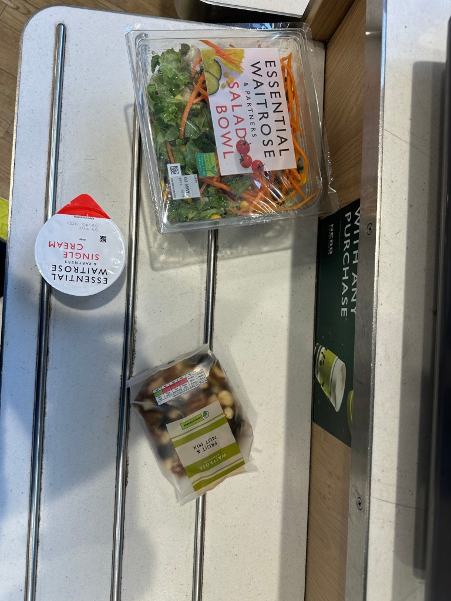

Ketogenic diet plan with gpt
https://chat.openai.com/share/7d32a08a-740c-47c1-9b63-7a5e7ca70568

Incorporating salads into your morning routine is a great way to start the day with a nutritious meal, especially on a ketogenic diet where you focus on low-carb and high-fat ingredients. Here’s a simple plan you can follow:
Morning Routine Plan
-
Hydration Start:
-
Begin your day with a glass of water or a warm cup of lemon water to hydrate and kickstart your metabolism.
-
Salad Preparation:
-
Proteins: Consider adding cooked chicken, turkey, hard-boiled eggs, or smoked salmon.
-
Healthy Fats: Include avocados, nuts (like almonds or walnuts), seeds (like chia or flaxseed), or a sprinkle of cheese (like feta or goat cheese).
-
Low-Carb Vegetables: Use a base of leafy greens such as spinach, kale, or romaine lettuce. Add other low-carb veggies like cucumbers, bell peppers, and radishes.
-
Dressing: Make a keto-friendly dressing with olive oil, vinegar, lemon juice, salt, and pepper. You can also add herbs like basil or parsley for more flavor.
-
Mindful Eating:
-
Take the time to enjoy your salad without distractions. Eating mindfully can help with digestion and satisfaction from your meals.
-
Planning Your Day:
-
While eating, think about what you need to accomplish for the day. Setting intentions can help you stay focused and productive.
-
Physical Activity:
-
After your meal, engage in some light physical activity. This could be a short walk, some stretching, or a quick yoga session to energize your body.
Tips for Success
-
Prep in Advance: Prepare ingredients for your salads in advance to save time in the morning.
-
Variety is Key: Rotate your salad ingredients regularly to ensure you're getting a range of nutrients and to keep your meals exciting.
-
Portion Control: Even on a keto diet, it's important to watch the portions of nuts, cheeses, and oils to avoid excessive calorie intake.
Adding this routine will not only nourish your body but also establish a structured and healthy start to your day. Enjoy your new morning ritual!
To estimate the calorie intake from your described meal, we'll need to make some assumptions about the portions and ingredients of each item:
-
Salad:
-
Ingredients may include leafy greens, some protein (e.g., chicken, eggs, or cheese), and a dressing. A typical bowl of salad can vary widely in calories depending on the ingredients, especially the type and amount of dressing and protein used. Let's estimate:
Leafy greens and vegetables: About 10-50 calories per bowl, depending on the types and amounts.
-
Protein (chicken, eggs, or cheese): About 100-200 calories per bowl.
-
Dressing (olive oil-based): About 120-150 calories per tablespoon.
-
Assuming a moderate amount of protein and dressing, each bowl might be approximately 300-400 calories.
-
Nuts:
-
Nuts are calorie-dense and high in fats. A typical serving (about 1 ounce or 28 grams) of mixed nuts is roughly 160-200 calories. If you had a typical handful, it's around this range.
-
Cream-based coffee:
-
If the coffee includes about an ounce of cream, that would be about 50-100 calories, depending on the type of cream (heavy, light, or half-and-half).
Total Caloric Intake Estimate:
-
Salads: 2 bowls x 350 calories each = 700 calories
-
Nuts: 200 calories (for a standard handful)
-
Cream-based coffee: 75 calories (average for a small amount of cream)
Grand Total: Approximately 975 calories
This is a rough estimate and can vary significantly based on the exact quantities and specific ingredients used in each component of your meal.
Given that you are a 43-year-old man who is not very active except for going to the gym twice a week, this calorie intake might be appropriate depending on your total daily calorie needs, which depend on factors like your current weight, height, metabolic health, and weight goals. Typically, an average man might need about 2,000 to 2,500 calories per day to maintain his weight, but this can vary. If you're trying to lose weight, you might aim for fewer calories, but this should ideally be done under the guidance of a nutritionist or a healthcare provider.
Imported from rifaterdemsahin.com · 2024